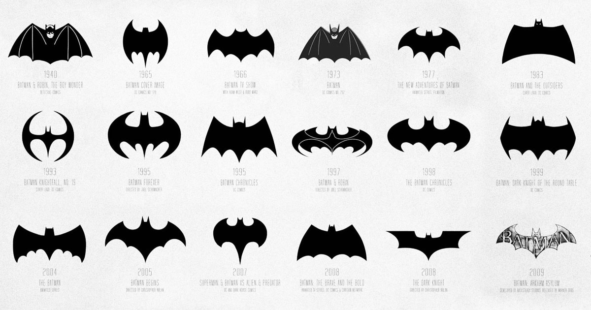
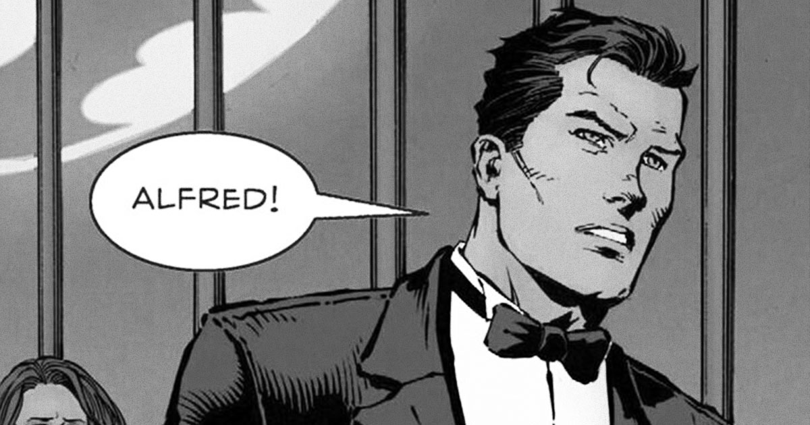
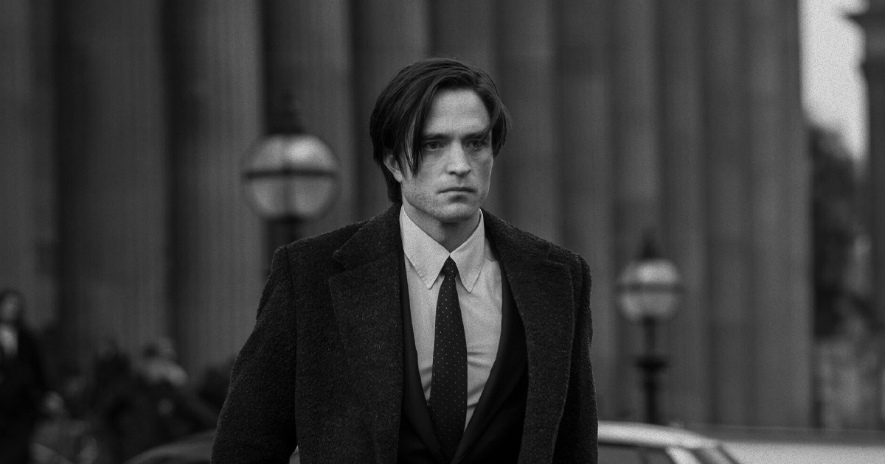
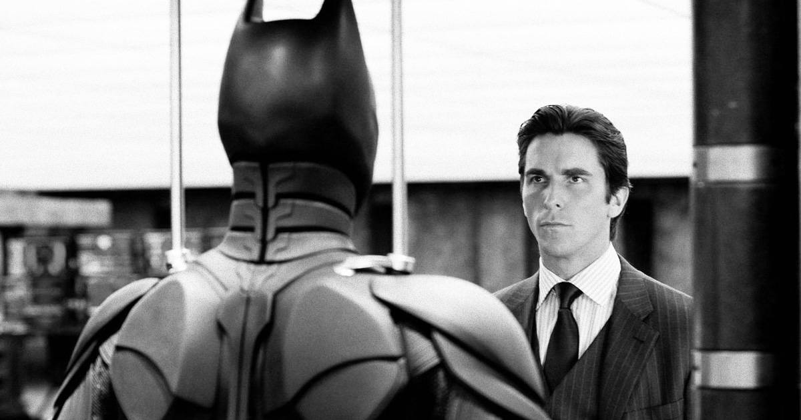

The Man, The Myth, The Bat
Batman originated on the pages of Detective Comics as a morally gray masked crime fighter in a noir styled city. Since then, he has captured the imaginations of millions worldwide. His relatable lack of powers and strong sense of justice, even in the face of impossible odds, makes him a beloved and timeless hero.
Bat Gadgets
Without superpowers to rely on, Batman relies on his physical strength and handy array of high-tech gadgets to get him out of the many tough situations he finds himself in. Such devices include:
- The Batarang: A bat-shaped throwing weapon used for offense, distraction, or disarming enemies; it’s one of Batman’s most versatile and iconic tools.
- The Grapnel Gun: A handheld launcher that fires a retractable cable and hook, allowing Batman to scale buildings, swing between rooftops, or pull objects from a distance.
- Explosive Gel: A specialized foam stored in Batman’s utility belt that can be sprayed onto surfaces and remotely detonated—perfect for breaching walls or setting traps.
The Look
Batman uses fear as a tool to win battles with evil before they even begin. Part of his mystique comes from his iconic bat-eared cowl and menacing cape. Without his suit, Batman wouldn’t be Batman. Some elements of his iconic costume include:
- Batman’s cowl is one of the most iconic elements of his costume, serving both practical and symbolic purposes. Designed to conceal Bruce Wayne’s identity and instill fear in criminals, the cowl combines gothic intimidation with high-tech sophistication. Traditionally featuring pointed ears reminiscent of a bat’s silhouette, it enhances Batman’s menacing presence in the shadows of Gotham. Over time, the cowl has evolved—from a simple fabric mask in early comics to an advanced piece of armor equipped with communication devices, night vision, and facial protection in modern interpretations. Beyond its function, the cowl represents Batman’s transformation; when he puts it on, he ceases to be Bruce Wayne and becomes a symbol of justice and vengeance.
- Batman’s utility belt is the cornerstone of his preparedness, embodying his intelligence, resourcefulness, and strategic mind. Far more than a simple accessory, the belt houses an arsenal of specialized tools and gadgets that allow Batman to adapt to nearly any situation. From batarangs, smoke pellets, and grappling hooks to forensic kits and miniaturized computers, every compartment is meticulously organized and purpose-built. The belt symbolizes Batman’s reliance on ingenuity rather than superpowers—his ability to turn human intellect into his greatest weapon. Across comics, films, and games, the design has evolved from a simple yellow pouch belt to a sleek, tactical piece of technology, reflecting both the era’s aesthetics and Batman’s ever-advancing war on crime.
- Batman’s cape is one of his most distinctive and dramatic features, combining theatrical flair with tactical function. Inspired by the silhouette of a bat’s wings, the cape enhances his fearsome image, allowing him to appear almost supernatural to criminals lurking in Gotham’s dark alleys. Beyond aesthetics, it serves as a vital tool—crafted from advanced materials that can glide, shield against attacks, and even stiffen into a protective barrier when electrified or reinforced. In the comics and films, the cape’s design has evolved from a simple flowing fabric to a marvel of engineering, symbolizing both Batman’s mastery of technology and his use of fear as a weapon. It’s a constant reminder that Batman is not just a man, but a myth carefully constructed to dominate the night.
The Man Behind the Bat
Bruce Wayne is a rich billionaire industrialist, philanthropist, the last surviving heir of the Wayne family. To keep his vigilante identity safe, he plays the role of a charming and carefree playboy to perfection, never missing a social cue. Beneath his polished public image, however, lies a man shaped by tragedy—the childhood loss of his parents, Thomas and Martha Wayne, in a violent crime that would define his life. By day, Bruce uses his intellect, resources, and determination to improve his city through the Wayne Foundation and countless charitable initiatives.
- 
- 
- 